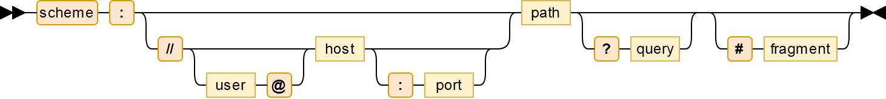
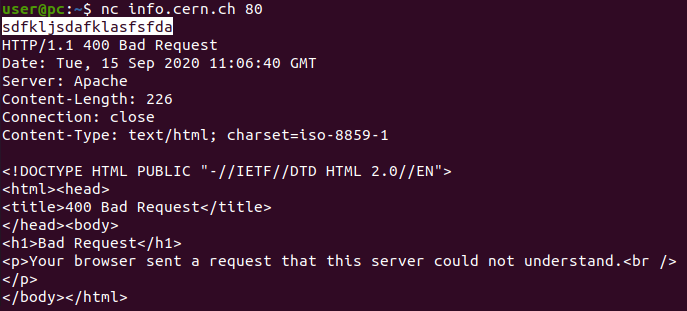
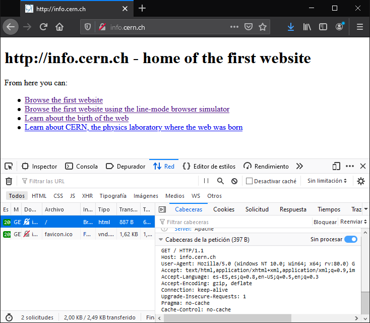

<meta charset="utf-8">
<meta name="viewport" content="width=device-width, initial-scale=1">
<script src="https://cdn.jsdelivr.net/npm/clipboard@2.0.6/dist/clipboard.min.js"></script>
<script type="module" src="/sofi/js/script.js"></script>
<link rel="stylesheet" href="/sofi/css/estil.css">

<nav></nav>
<header>
    <h1>WebApps</h1>

    <abstract>
        <p>
            En aquesta pràctica ens iniciarem amb les tecnologies que s'utilitzen per al desenvolupament
            d'aplicacions web.
        </p>
        <p>
            Necessitaràs <a href="/setupwebserver/">tenir preparat un contenidor</a>.
        </p>
    </abstract>
</header>

<section>
    <h2>World Wide Web</h2>

    <p>El científic anglés <a href="https://ca.wikipedia.org/wiki/Tim_Berners-Lee">Tim Berners-Lee</a> 
        va inventar la World Wide Web (WWW), Xarxa d'Abast Mundial, en 1989, mentre treballava al CERN.
    </p>
    <p>Coneguda comunament com la Web, és un sistema
        d'informació on documents i altres recursos són identificats amb URLs (Uniform Resource Locators),
        com, per exemple, <url>http://wikipedia.org</url>, que poden ser enllaçats amb 
        <a href="https://ca.wikipedia.org/wiki/Hipertext">hypertext</a>, i són accessibles a través 
        d'Internet.
        <br>Els recrsos de la Web són transferits pels Servidors Web via l'
        <a href="https://en.wikipedia.org/wiki/Hypertext_Transfer_Protocol">Hypertext Transfer Protocol</a> 
        (HTTP) i es pot accedir a ells utilitzant el Navegador Web.
    </p>
</section>

<section>
    <h2>URL</h2>

    <p>Com hem dit, les URLs són identificadors de recursos. Els recursos poden ser molt diversos: pàgines,
        imatges, videos, fitxers, etcètera. Per exemple:</p>
    
    <ul>
        <li><p>La url <url>http://info.cern.ch/</url> identifica la pàgina principal del CERN</p></li>
        <li><p>La url <url>https://upload.wikimedia.org/wikipedia/commons/f/f8/Tim_Berners-Lee.jpg</url>
        identifica una imatge (de Tim, és clar)</p></li>
        <li>La url <url>https://upload.wikimedia.org/wikipedia/commons/a/a3/Tim_Berners_Lee_changed_the_world_25_years_ago_-_Tim_Berners_Lee.webm</url>
            identifica un vídeo.<p></p></li>
    </ul>

    <p>Una URL es compon de 7 components:</p>

    

    <ul>
        <li><name>Scheme</name>: defineix el protocol d'accés al document 
            (<tech>http</tech>, <tech>https</tech>, <tech>ftp</tech>, <tech>mailto</tech>, <tech>file</tech>, <tech>data</tech>)</li>
        <li><name>User</name>: la identifiació de l'usuari que accedeix al recurs</li>
        <li><name>Host</name>: l'adreça IP o el nom DNS del servidor</li>
        <li><name>Port</name>: El port del servidor al qual es connecta</li>
        <li><name>Path</name>: Identifica el recurs al qual es vol accedir</li>
        <li><name>Query</name>: Dades addicionals sobre el recurs</li>
        <li><name>Fragment</name>: Localització a dintre del propi recurs</li>
    </ul>

    Anem a veure amb més detall aquests components.

    <h3>Scheme</h3>
    <p>El protocol d'accés al recurs indica la forma concreta en que s'han de
        comunicar el que fa la petició i el que la respón.</p>
    
    <p>Per exemple, el protocol <tech>http</tech> serveix per a comunicar
        amb un servidor web. La especificacio del protocol és molt extensa, però podem veure un
        exemple senzill.</p>
    <p>En la seva forma més utilitzada, HTTP serveix per a obtenir recursos.</p>
    <p>Suposem que volem obtenir la pàgina principal del CERN. Aleshores, hem de realitzar
        un petició HTTP al seu servidor (<tech>info.cern.ch</tech>). Les dades que enviarem al servidor han de seguir
        exactament el protocol.
    </p>

    <p>Utilitzarem el programa <inshell>nc</inshell> per a comunicar amb el servidor del CERN.</p>

    <p>Obre un terminal i executa la següent comanda:</p>

    <terminal>
        <host>@host</host>
        <shell>
            nc info.cern.ch 80
        </shell>
    </terminal>

    <p>Amb aquesta comanda hem connectat al port <tech>80</tech> del servidor del CERN.
        <br>Ara el servidor està esperant que li enviem dades.</p>
    <p>Si enviem qualsevol dada al servidor, aquest no serà capaç de comprendre la petició.
        Li hem de enviar les dades adequades, seguint el protocol HTTP.
    </p>
    <p>Prova a escriure alguna cosa, i polsa <kbd>Intro</kbd> per a enviar les dades al servidor.</p>
    <p>El servidor respondrà amb un error <tech>400 (Bad request)</tech>. La petició no ha estat correcta.</p>

    

    <p>Per a fer la petició correcta hem fer el següent:</p>
    <ol>
        <li>
            <p>Connectem amb el servidor:</p>
            <shell>
                nc info.cern.ch 80
            </shell>    
        </li>
        <li>
            <p>Escrivim la comanda <inshell>GET</inshell>, 
                <br>després el recurs que volem <inshell>/index.html</inshell>
                <br>després la versió del protocol <inshell>HTTP/1.0</inshell>
                <br>després un "retorn de carro" <kbd>Ctrl + V</kbd> <kbd>Ctrl + M</kbd>
                <br>i per últim un "retorn de línia" <kbd>Intro</kbd>
            </p>
            <shell>            
                GET /index.html HTTP/1.0 <kbd>Ctrl + V</kbd> <kbd>Ctrl + M</kbd> <kbd>Intro</kbd>
            </shell>    
        </li>
        <li>
            <p>Especifiquem el Host al qual estem connectant
                <br>introduint <inshell>Host: info.cern.ch</inshell>
                <br>"retorn de carro" <kbd>Ctrl + V</kbd> <kbd>Ctrl + M</kbd>
                <br>i "retorn de línia" <kbd>Intro</kbd>
            </p>
            <shell>
                Host: info.cern.ch <kbd>Ctrl + V</kbd> <kbd>Ctrl + M</kbd> <kbd>Intro</kbd>
            </shell>
        </li>
        <li>
            <p>Indiquem al servidor que ha finalitzat la petició amb
                <br>"retorn de carro" <kbd>Ctrl + V</kbd> <kbd>Ctrl + M</kbd>
                <br>i "retorn de línia" <kbd>Intro</kbd>
            </p>
            <shell>
                <kbd>Ctrl + V</kbd> <kbd>Ctrl + M</kbd> <kbd>Intro</kbd>
            </shell>
        </li>
    </terminal>

    <p>Aquest cop sí, el servidor ens respon amb <incode>200 (OK)</incode>, i 
    ens retorna el recurs solicitat.</p>

    

    <info>
        Aquesta petició que hem realitzat a mà és exactament el que fa el navegador web
        quan introduim la URL <url>http://info.cern.ch</url> a la barra d'adreçes.

        <p>Pots comprovar-ho de la següent forma:
            <ol>
                <li><p>Obre una pestanya nova del Firefox</p></li>
                <li><p>Polsa <kbd>F12</kbd> per a obrir les 
                    <strong>Eines de desenvolupador</strong></p></li>
                <li><p>Ves a la pestanya </p></li>
                <li><p>Introdueix <url>http://info.cern.ch/index.html</url> 
                    a la barra d'adreçes i navega a la pàgina</p></li>
                <li><p>Firefox et mostrarà tots els recursos que està 
                    descarregant del servidor</p></li>
                <li><p>Selecciona el recurs <tech>index.html</tech></p></li>
                <li><p>A la pestanya lateral , baixa
                fins a  i activa l'opció
                    </p>
                </li>
            </ol>
        </p>
        <p>Ahí pots veure tota la petició HTTP que s'ha realitzat:</p>
        
    </info>

    <p>Ho farem ara al servidor que tenim instal·lat al nostre contenidor.</p>

    <h3>User</h3>
    <p>Alguns servidors requereixen d'autenticació amb usuari:contrasenya per a accedir 
        a certs recursos</p>
    </p>

    <p>Configurarem el nostre servidor per a requerir usuari:contrasenya en l'accés.</p>

    <p>Obrim el fitxer de configuració del servidor Apache:</p>

    <terminal>
        <host>@container</host>
        <shell>nano /etc/apache2/sites-enabled/000-default</shell>
    </terminal>

    <p>Afegim les següents línies per a activar l'accés amb usuari/password:</p>

    <codefile>
        /etc/apache2/sites-enabled/000-default
    </codefile>
    <code none data-line="8,9,10">
        &lt;VirtualHost *:80&gt;
            ServerAdmin webmaster@localhost
            DocumentRoot /var/www/html
            
            ErrorLog ${APACHE_LOG_DIR}/error.log
            CustomLog ${APACHE_LOG_DIR}/access.log combined

            &lt;Directory /var/www/html&gt;
                AllowOverride all
            &lt;/Directory&gt;
        &lt;/VirtualHost&gt;
    </code>

    <p>Creem l'usuari <w>Juan</w>:</p>
    <terminal>
        <host>@container</host>
        <shell>
            htpasswd -c /var/www/contrasenyes joan
        </shell>
    </terminal>


    <p>Comprovem que s'ha creat l'usuari:</p>
    <terminal>
        <host>@container</host>
        <shell>
            cat /var/www/contrasenyes
        </shell>
    </terminal>


    <p>Restringirem l'accés a la carepta <w>/var/www/html</w> a només aquells usuaris 
    que estiguin en l'arxiu <w>/var/www/contrasenyes</w>. Per fer-ho hem de crear un fitxer anomenat <file>.htaccess</file> 
    dintre de la carpeta que volem registringir:</p>

    <terminal>
        <host>@container</host>
        <shell>nano /var/www/html/.htaccess</shell>
    </terminal>

    <p>El contingut de l'arxiu <file>.htaccess</file> ha de ser aquest:</p>
    <codefile>
        /var/www/html/.htaccess
    </codefile>
    <code none>
        AuthType Basic
        AuthName "Introdueix el teu usuari i contrasenya"
        AuthBasicProvider file
        AuthUserFile "/var/www/contrasenyes"
        Require valid-user
    </code>

    <p>Per últim reiniciem el servidor Apache:</p>

    <terminal>
        <host>@container</host>
        <shell>/etc/init.d/apache2 restart</shell>
    </terminal>

    <h3>Host</h3>
    <p>El host és l'adreça IP o nom DNS del servidor.</p>

    <p>Configurarem el servidor web per a que mostri dues pàgines diferents en funció del <w>Host</w> que se 
        li indiqui en la petició:</p>

    <p>Crearem dues carpetes (<directory>aaa.com</directory> i <directory>bbb.com</directory>), 
        i en cadascuna d'elles posarem una web diferent</p>
    <terminal>
        <host>@container</host>
        <shell>
            mkdir /var/www/html/aaa.com
            mkdir /var/www/html/bbb.com
            echo "&lt;h1&gt;welcome to aaa.com&lt;/h1&gt;" > /var/www/html/aaa.com/index.html
            echo "&lt;h1&gt;welcome to bbb.com&lt;/h1&gt;" > /var/www/html/bbb.com/index.html
        </shell>
    </terminal>

    <p>Canviem la configuració d'Apache per a que busqui els recursos que se li sol·licitin 
        en una carpeta o l'altra en funció del Host (<w>ServerName</w>) que s'indiqui a la petició <w>http</w>:</p>
    <codefile>
        /etc/apache2/sites-enabled/000-default
    </codefile>
    <code none>
        &lt;VirtualHost *:80&gt;
            ServerName aaa.com
            DocumentRoot /var/www/html/aaa.com
        &lt;/VirtualHost&gt;

        &lt;VirtualHost *:80&gt;
            ServerName bbb.com
            DocumentRoot /var/www/html/bbb.com
        &lt;/VirtualHost&gt;
    </code>


    <p>Realitzem dues peticions als diferents noms de <w>host</w>:</p>
    <terminal>
        <host>@host</host>
        <shell>
            printf 'GET /index.html HTTP/1.0\r\nHost aaa.com\r\n\r\n' | nc <replace>{IP_CONTENIDOR}</replace> 80
            printf 'GET /index.html HTTP/1.0\r\nHost bbb.com\r\n\r\n' | nc <replace>{IP_CONTENIDOR}</replace> 80
        </shell>
    </terminal>

    <p>Observa que segons el <w>Host</w> indicat a la petició, es retorna una web o l'altra.</p>


    <h3>Port</h3>

    <p>Configurem Apache per a permetre conexions al port <w>8080</w>:</p>
    <terminal>
        <host>@host</host>
        <shell>
            nano /etc/apache2/ports.conf
        </shell>
    </terminal>
    
    <codefile>
        /etc/apache2/ports.conf
    </codefile>
    <code none data-line="2">
        Listen 80
        Listen 8080


        # resta de lines
        # ...
    </code>

    <p>Servim dues pàgines diferents en funcio del port de conexió:</p>

    <codefile>
        /etc/apache2/sites-enabled/000-default
    </codefile>
    <code none>
        &lt;VirtualHost *:80&gt;
            DocumentRoot /var/www/html/aaa.com
        &lt;/VirtualHost&gt;

        &lt;VirtualHost *:8080&gt;
            DocumentRoot /var/www/html/bbb.com
        &lt;/VirtualHost&gt;
    </code>

    <p>Accedim a <url>http://<replace>ip_contenidor</replace>:80</url></p>
    <p>Accedim a <url>http://<replace>ip_contenidor</replace>:8080</url></p>


    <h3>Path</h3>

    <p>Si no s'especifica cap arxiu en el <w>path</w>, 
        per defecte, el servidor apache servirà l'arixu 
        <file>index.html</file>, i si aquest arxiu no existeix,
        servirà una pàgina que llistarà els arxius del directori:
    </p>

    <p>Anem a crear diversos arxius al directory <directory>/var/www/html</directory>:</p>

    <terminal>
        <host>@container</host>
        <shell>
            echo "&lt;h1&gt;Home page&lt;/h1&gt;" > /var/www/html/index.html
            echo "&lt;h1&gt;Pagina xxx &lt;/h1&gt;" > /var/www/html/xxx.html
            echo "&lt;h1&gt;Pagina yyy &lt;/h1&gt;" > /var/www/html/yyy.html
            echo "&lt;h1&gt;Pagina zzz &lt;/h1&gt;" > /var/www/html/zzz.html
        </shell>
    </terminal> 
    
    <p>Comprovem que tenim aquests arxius a <directory>/var/www/html</directory>:</p>

    <terminal>
        <host>@container</host>
        <shell>
            ls /var/www/html
            index.html   xxx.html   yyy.html   zzz.html
        </shell>
    </terminal>

    <p>Si ara fem una petició al servidor sense indicar cap arxiu <url>http://10.2.4.1</url>
    el servidor ens enviarà l'arxiu <file>index.html</file> </p>

    <p>Si especifiquem algun arxiu a la petició (e.g. <url>http://10.2.4.1/xxx.html</url>) Apache ens servirà aquest arxiu.</p>

    <p>Si l'arxiu que posem a la url (e.g. <url>http://10.2.4.1/opq.html</url>) no existeix, apache ens servirà una 
    pàgina <strong>"Not Found"</strong></p>

    <p>Per últim, esborrem l'arxiu <file>index.html</file>:</p>
    <terminal>
        <host>@container</host>
        <shell>
            rm /var/www/html/index.html
        </shell>
    </terminal>
    <p>... i comprovem que Apache ens mostra un pàgina amb la llista d'arxius del 
        directori, quan no especifiquem cap arxiu a la url <url>http://10.2.4.1/</url> i no hi ha un <file>index.html</file>:
    </p>
    


    <p>Al <w>path</w> de la url també es poden especificar els directoris on es troba l'arxiu que se solicita. Apache
    buscarà aquest arxius a partir del <w>DocumentRoot</w>.</p>

    <p>Per exemple, si el <w>DocumentRoot</w> és <w>/var/www/html</w>, i fem aquesta petició: 
        <url>http://10.2.4.1/aaa/bbb/mmm.html</url>, Apache buscarà aquest arxiu 
        <w>/var/www/html/aaa/bbb/mmm.html</w>. Comprovem-ho:</p>

    <terminal>
        <host>@container</host>
        <shell>
            mkdir -p /var/www/html/aaa/bbb/
            echo "&lt;h1&gt;Pagina mmm &lt;/h1&gt;" > /var/www/html/aaa/bbb/mmm.html
        </shell>
    </terminal>
    
    <p>Comprova que s'accedeix al recurs <file>mmm.html</file> amb aquesta URL <url>http://10.2.4.1/aaa/bbb/mmm.html</url>.</p>

    <p>Ara anem a canviar el <w>DocumentRoot</w>, i farem que sigui <directory>/var/www/html/aaa/</directory>:</p>

    <codefile>
        /etc/apache2/sites-enabled/000-default
    </codefile>
    <code none>
        &lt;VirtualHost *:80&gt;
            DocumentRoot /var/www/html/aaa
        &lt;/VirtualHost&gt;
    </code>

    <p>Reiniciem el servidor:</p>

    <terminal>
        <host>@container</host>
        <shell>
            /etc/init.d/apache2 restart
        </shell>
    </terminal>

    <p>Ara, per a accedir al recurs <file>mmm.html</file>, la URL que cal posar és <url>http://10.2.4.1/bbb/mmm.html</url>.</p>


    <h3>Query</h3>

    <p>La <w>query</w> serveix per a passar dades extra al recurs que s'està solicitant.</p>

    <p>Veiem un exmple:</p>

    <p>En aquesta url <a href="https://www.google.com/search?q=animals">https://www.google.com/search?q=animals</a>, estem passant al recurs <w>search</w> la dada extra 
    <w>q=animals</w>. Aquest recurs ja sabrà que fer amb aquesta dada extra. Si li passem una query que el recurs no sap 
    processar, normalment la ignorarà: 
    <a href="https://www.google.com/search?jajaja=jejeje">https://www.google.com/search?jajaja=jejeje</a>.</p>


    <p>Anem a fer al nostre contenidor un recurs que accepti una <w>query</w> amb dades extra i faci alguna cosa amb aquestes
    dades.</p>

    <warn>
        <p>Abans anem a ressetejar la configuració d'Apache, ja que abans l'hem deixat una mica trastocada. Tornarem a posar
            el <w>DocumentRoot</w> al seu lloc habitual.
        </p>

        <terminal>
            <host>@container</host>
            <shell>
                printf "&lt;VirtualHost *:80&gt;\n\tDocumentRoot /var/www/html\n&lt;/VirtualHost&gt;" > /etc/apache2/sites-enabled/000-default.conf
                
                /etc/init.d/apache2 restart
            </shell>
        </terminal>
    </warn>

    <p>Primer hem de comprendre que el recurs no pot ser una pàgina <w>HTML</w>, ja que el llenguatge HTML només és per a 
    definir el contingut de la pàgina. És a dir, amb HTML no podem accedir a les dades de la <w>query</w>.</p>

    <p>Un llenguatge que sí pot obtenir les dades de la <w>query</w> i fer alguna cosa amb aquestes dades es <w>PHP</w>.
    Anem a veure uns exemples simples amb el que es pot fer amb <w>PHP</w>.</p>

    <p>Primer l'instal·lem:</p>

    <terminal>
        <host>@container</host>
        <shell>apt install -y php</shell>
    </terminal>

    <p>Crearem un senzill script <w>php</w> que ens permetrà executar comandes al servidor a través del navegador web.</p>

    

    <p>Anomenarem aquest recurs <strong>WEBASH</strong> (web + bash):</p>

    <terminal>
        <host>@container</host>
        <shell>
            nano /var/www/html/webash.php
        </shell>
    </terminal>

    <p>Afegim el següent codi a l'arxiu <file>webash.php</file>:</p>
    <codefile>
        /var/www/html/webash.php
    </codefile>
    <code php>
        &lt;?php
        echo "&lt;style&gt; body { font-family: Consolas, monospace; }&lt;/style&gt;";
        echo "&lt;span style='font-size: 2em;'&gt;webash/&lt;/span&gt;";
        echo "&lt;span&gt;web&bash&lt/span&gt;";
        ?&gt;
    </code>

    <p>Si accedim al recurs <w>http://10.2.4.164/webash.php</w> veurem la pàgina generada per l'script <file>webash.php</file>:</p>

    

    <observe>
        <p>Fixa't que el que fa l'script <w>php</w> és generar codi HTML amb els <w>echo</w>. Apache executa 
            l'script i retorna al navegador tot el que ha mostrar l'script amb els <w>echo</w>.</p>
        <p>Per a generar codi html posarem <w>echo</w>, el codi html entre cometes <w>""</w> i punt-i-coma <w>;</w>:</p>
        <code php>
            echo "<replace>codi html</replace>";
        </code>

        <p>Tot el codi PHP que escrivim ha d'anar dintre de les etiquetes <w>&lt;?php</w> i <w>?&gt;</w>:</p>

        <code php>
            &lt;?php

            // codi PHP

            ?&gt;
        </code>
    </observe>

    <p>De moment, el nostre codi PHP sempre mostra el mateix contingut, independentment de la <w>query</w> que li passem.
    És a dir, posis les dades que posis a la <w>query</w>, l'script les ignorarà. Per exemple: 
    <url>http://10.2.4.164/webash.php?comanda=pstree</url>, o <url>http://10.2.4.164/webash.php?hola=quetal</url></p>

    <p>Anem a modificar l'script per que agafi una dada de la <w>query</w> i faci alguna cosa:</p>

    <p>Afegim aquestes línies de codi a l'arxiu <file>webash.php</file>:</p>
    <codefile>
        /var/www/html/webash.php
    </codefile>
    <code php data-line="6,7,8">
        &lt;?php
        echo "&lt;style&gt; body { font-family: Consolas, monospace; }&lt;/style&gt;";
        echo "&lt;span style='font-size: 2em;'&gt;webash/&lt;/span&gt;";
        echo "&lt;span&gt;web&bash&lt/span&gt;";

        echo "&lt;h1&gt;Hola ";
        echo $_GET['usuari'];
        echo "&lt;/h1&gt;";
        ?&gt;
    </code>

    <p>Ara posem la query <w>usuari=gerard</w> a la url: <url>http://10.2.4.164/webash.php?usuari=gerard</url>. 
    L'script php genera aquesta web:</p>

    

    <observe>
        <p>Amb el codi <w>$_GET['usuari']</w> de la línia <ln>7</ln>, hem obtingut el valor de la dada <w>usuari</w>
        de la query, i l'hem utilitzat per a generar el contingut de l'etiqueta <w>&lt;h1&gt;</w>.</p>

        <p>Si fas la query amb un altre valor per a la dada <w>usuari</w>, l'script generarà un altre codi html que 
        inclourà aquest valor.</p>

        <p>Per contra, si canvies la paraula <w>usuari</w> per una altra cosa, l'script ignorarà la dada.</p>

    </observe>

    <p>Quan introduïm alguna cosa en el camp de text, per exemple <name>hola</name> i li donem al botó <menuoption>Executar</menuoption></p>

    <p>Avançarem amb el webash, i ara farem que se li passi una dada anomenada <w>comanda</w>. L'script agafarà el valor
    d'aquesta dada i l'executarà al sistema operatiu.</p>

    <p>Esborra les línies anteriors, i afegeix aquesta línia:</p>
    <codefile>
        /var/www/html/webash.php
    </codefile>
    <code php data-line="6">
        &lt;?php
        echo "&lt;style&gt; body { font-family: Consolas, monospace; }&lt;/style&gt;";
        echo "&lt;span style='font-size: 2em;'&gt;webash/&lt;/span&gt;";
        echo "&lt;span&gt;web&bash&lt/span&gt;";

        system($_GET['comanda']);
        ?&gt;
    </code>

    <p>Ara l'script agafarà el valor de la dada anomenada <w>comanda</w> i l'executarà. Per exemple podem executar 
    la <w>pstree</w> així: <url>http://10.2.4.164/webash.php?comanda=pstree</url>:</p>

    

    <observe>
        <p>La funció <w>system</w> executa el que se li posi entre els parèntesi, i el resultat de la comanda, 
        s'inclou a la pàgina generada.</p>

        <p>El que està executant aleshores la funció <w>system</w> és el valor de la dada <w>comanda</w> de la query.
        Prova a posar aquesta url <url>http://10.2.4.164/webash.php?comanda=cal</url> o qualsevol altra comanda a 
        la query.</p>
    </observe>

    <p>Seguirem ara donant un mica d'estil a les dades generades per <w>system</w>, ja que queden totes seguides i 
    sense format. Posarem tot el que genera el <w>system</w> dintre d'un element <w>&lt;pre&gt;</w>. Li posarem
    també una mica d'estil CSS al <w>&lt;pre&gt;</w>.</p>
    <codefile>
        /var/www/html/webash.php
    </codefile>
    <code php data-line="6,8">
        &lt;?php
        echo "&lt;style&gt; body { font-family: Consolas, monospace; }&lt;/style&gt;";
        echo "&lt;span style='font-size: 2em;'&gt;webash/&lt;/span&gt;";
        echo "&lt;span&gt;web&bash&lt/span&gt;";

        echo "&lt;pre style='width: 80ch; padding: 2ch; overflow: auto; color: white; background: #300A24;'>";
        system($_GET['comanda']);
        echo "&lt;/pre&gt;";
        ?&gt;
    </code>

    <p>Provem a veure com queda <url>http://10.2.4.164/webash.php?comanda=df -h</url></p>
    

    <p>Per últim, afegirem a webash una forma més còmoda de realitzar comandes, que no sigui posant-les a la url.
        Afegirem un formulari amb un camp de text i un botó:
    </p>

    <codefile>
        /var/www/html/webash.php
    </codefile>
    <code php data-line="6,7,8,9">
        &lt;?php
        echo "&lt;style&gt; body { font-family: Consolas, monospace; }&lt;/style&gt;";
        echo "&lt;span style='font-size: 2em;'&gt;webash/&lt;/span&gt;";
        echo "&lt;span&gt;web&bash&lt/span&gt;";

        echo "&lt;form&gt;";
        echo "&lt;input name='comanda'&gt";
        echo "&lt;input type='submit' value='Executar'&gt;";
        echo "&lt;/form&gt;";

        echo "&lt;pre style='width: 80ch; padding: 2ch; overflow: auto; color: white; background: #300A24;'>";
        system($_GET['comanda']);
        echo "&lt;/pre&gt;";
        ?&gt;
    </code>

    <p>Ara ens serà més còmode executar una comanda: </p>

    

    <p>Quan es premi el botó Executar, automàticament el navegador web agafarà els camps del <w>&lt;form&gt;</w> i els afegirà 
    a la query de la petició. Anomenarà les dades de la query segons l'atribut <w>name</w> dels <w>&lt;input&gt;</w> i el 
    valor serà el que s'hagi escrit en ells.</p>

    <h3>Fragment</h3>
    <p>El <w>fragment</w> serveix per a fer que el navegador posicioni la pàgina en una secció determinada. Aquesta part
    de la url no arriba al servidor, és el navegador el qui ha de saber com gestionar el <w>fragment</w>.</p>

    <p>Veiem un exmple:</p>

    <p>Generem un arxiu html extens amb 5 seccions (<w>id=sX</w>) i 30 paràrafs en cada secció:</p>
    <terminal>
        <host>@container</host>
        <shell>
            for i in {1..5}; do printf "&lt;h1 id='s$i'&gt;Seccio $i&lt;/h1&gt;; for j in {1..30}; do printf "&lt;p&gt;seccio $i, paràgraf $j&lt;/p&gt;"; done; done > /var/www/html/llarg.html
        </shell>
    </terminal>
</section>

<section>
    <h2>El navegador web</h2>


</section>
